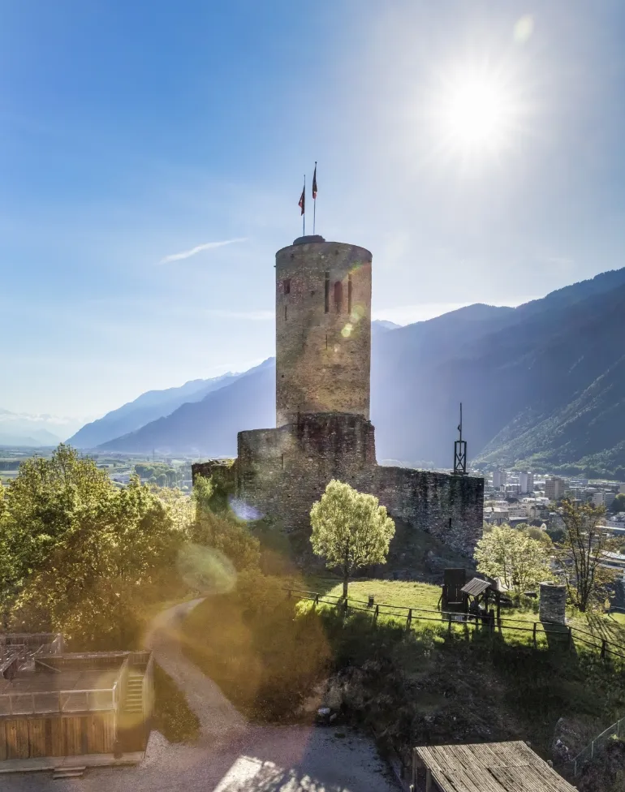

Bienvenue à Martigny, une ville suisse dynamique et authentique nichée au cœur des Alpes valaisannes.
Avec ses paysages époustouflants, son riche patrimoine culturel et son ambiance chaleureuse,
Martigny est une destination prisée pour les visiteurs du monde entier.
Au carrefour de l’Europe, Martigny jouit d’une position stratégique, à proximité des frontières française et italienne.
Cette situation privilégiée en fait un lieu de passage incontournable pour
les voyageurs en quête de découvertes.
La ville abrite un patrimoine historique et culturel d’une grande richesse.
Les passionnés d’histoire seront comblés par ses quartiers et ses ruelles pittoresques,
tandis que les amateurs d’art pourront
découvrir les œuvres exceptionnelles exposées à la Fondation Pierre Gianadda,
l’un des plus prestigieux musées d’Europe.
Martigny est également réputée pour ses événements culturels de renommée internationale.
Chaque année, la ville accueille des festivals, des concerts et des compétitions qui attirent de nombreux visiteurs.
De plus, les passionnés de sports d’hiver trouveront leur bonheur dans les stations de ski alentours
(Verbier, Bruson, La Creusaz/Les Marécottes, Ovronnaz, la Tzoumaz), accessibles en quelques minutes seulement.
Mais Martigny ne se limite pas à son passé et à ses traditions. C’est aussi une ville moderne et dynamique,
tournée vers l’avenir. Son économie prospère, ses infrastructures innovantes et sa qualité de vie
exceptionnelle en font un lieu de
résidence prisé pour les familles, les entrepreneurs et les travailleurs.
Que vous soyez de passage pour un court séjour ou que vous envisagiez de vous installer durablement,
Martigny saura vous séduire par son charme intemporel et son art de vivre incomparable.
Explorez ses rues animées, dégustez sa gastronomie savoureuse et laissez-vous envoûter par l’atmosphère
unique de cette ville aux mille facettes.
Bienvenue à Martigny, où l’aventure commence au cœur des Alpes suisses.